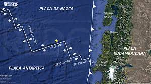
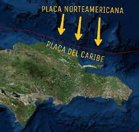
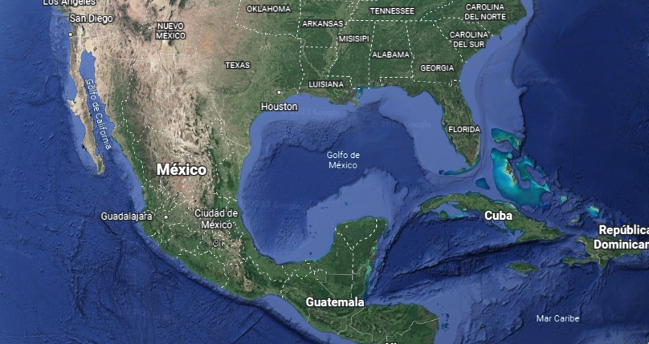
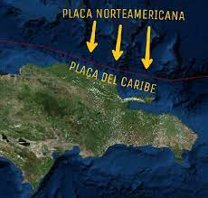
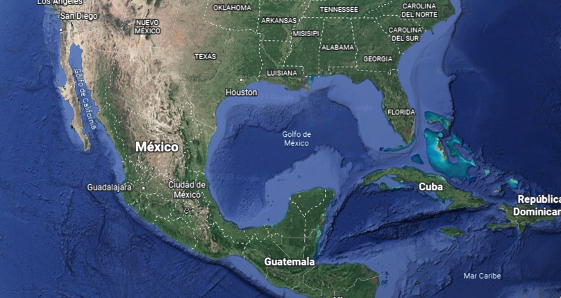

Turismo geológico, un viaje a través del tiempo.
Las fallas transformantes son las que tienen desplazamiento lateral entre sí. Esto tiende a causar una gran actividad sísmica además de generar nuevo suelo marino y separar las placas continentales. En la imagen se muestra claramente su trazado curvo y sinuoso con respecto a la expansión del suelo marino. las mayores y más importantes fallas de esta clase se ubican bajo el mar. Esto implica que no son fáciles de ver y observar, con la excepción de algunas zonas, como las que les ofrecemos a continuación:
Dorsal Mesoatlántica Dorsal Islandesa


Dorsal Sudoamericana-Nazca Dorsal Norteamericana-Pacífica/Caribe
  
 